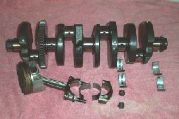
¶ Shafts turn on two different types of bearings.
- Ball or Roller Bearings.
- Plain Bearings, with Plain Bearings coming in two flavors.
- With Bushings or Bearing Shells.
- Without Bushings or Bearing Shells.
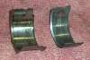
Plain Bearings come in two styles. Shafts under low stress like Camshafts and Rocker Arm Shafts, have no bearing shells and the shafts run right on the head metal, usually aluminum. If the parts are under a lot of stress, like Crankshafts mains and Rod big ends, there will usually be a special metal insert, called a Bushing or Bearing Shell, between the moving parts. The higher the stress the higher the oil pressure must be. Plain Bearings are very reliable as long as there is oil and oil pressure. If the oil pressure fails because of lack of oil or because the oil is old and thin, the moving metal parts will touch and start to wear. I have seen parts actually weld themselves together. This is because of the heat from the friction of the metal parts rubbing together. Rub your hands together fast and hard and you can actually feel the heat. The same thing happens with metal... only more so.
As long as you have good oil pressure and good oil, the Plain Bearing will last just about forever. I once read of an engine built for a sawmill in 1920s that was run continuously, 24 hours a day, 7 days a week up till the early 1970s. When the engine was taken apart they found they could see the original tool marks on the bearing shells. The wear on a plain bearing engine occurs when the engine is first started. On startup there is no oil flow or oil pressure so there is a minute amount of wear before the oil pressure comes up.
Plain Bearings with no bushing are usually used for the camshaft in the cylinder head. There are several ways they are used.
- In a hole or tunnel drilled (Machined) in a one piece cylinder head holding the camshaft and rocker arms.
- In a hole or tunnel drilled (Machined) in a one piece cylinder head with a cap holding the camshaft and rocker arms.
- In a hole or tunnel drilled (Machined) in a two piece cylinder head holding the camshaft and rocker arms with one end of the camshaft in a bushing.
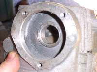 One Piece Head. |
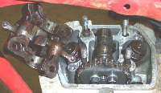 One piece head and cap. |
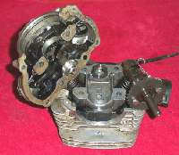 Two piece head with one bushing. |
Plain Bearings with Bushings (Bearing Shells) can wear and start hammering or spinning the bearing shells. This is usually fairly obvious as you can see from these pictures.
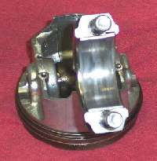 Good Rod bushing. |
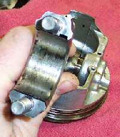 Bad Rod bushing. |
I am always amazed at how many engines use plain bearings with no bushing. Steel on aluminum works just great as long as there is oil pressure fed to it. Loose oil pressure and you are toast. I still get calls from people with one of the old XR/XL 500 Hondas wanting to know if I can fix that noise in the head. They say the bike looks brand new but was run low on oil just once. Can I fix it? Yes. Can I fix it cheap? NO. The reason it costs so much is this. They have to line bore the worn plain bearing big enough to accept a roller bearing. Then they have to turn down the camshaft to fit the bearing. Lots of expensive, exacting head work. All this could have been avoided if the factory had done it right in the first place. Of course, maybe the factory foolishly thought the Owner would actually check the oil once in a while. Perish the thought that the Owner would actually CHANGE the oil.
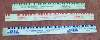

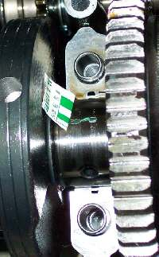 Plastigauge on a crankshaft Main Bearing. |
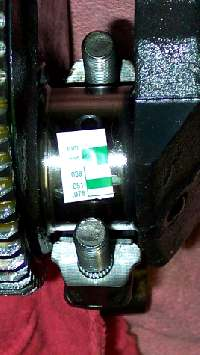 plastigauge on a crankpin. |
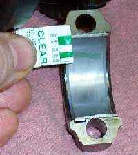 Plastigauge on a Rod Cap. |
If the bushing (Bearing Shell) measures within the correct specification as measured with plastigauge, you may reuse it. If it is worn too much you will have to replace it with a thicker shell. On some machines you can order a bearing shell that is just a little bit thicker. Test it with the Plastigauge and if it has the right clearance your good to go. If not, you may have to take the crank to a machine shop and have it ground undersize. That is IF you can get undersize bearing Shells for it. These usually come in several sizes like .010", .020", .030". I say IF because some engines have two or three bearing shell sizes that are very close together. If your wear is more then a few thousands of an inch you are just plain out of luck. It's new crankshaft time. With crankshafts going for one thousand (in 2006) dollars this can be a real bummer.
If there is no bearing cap or cylinder head cover, you may have to check the clearance with special expanding ball gauges. You expand the gauge, which come in many different sizes, till it is snug in the bore. Then remove the gauge and measure it with a micrometer. I have never bought these gauges because it's usually very obvious (At least on motorcycle engines) that the head is worn. If it looks good, it most likely is good.
When you take an engine apart, wiggle the camshaft up and down in it's plain bearing. Now look at it. If it felt real loose, you should be able to see the wear. On a dry clean shaft there should be just a bit of clearance. Maybe a one or two thousands of an inch on camshafts. On rocker arm shafts there should be almost nothing.
Roller Bearings

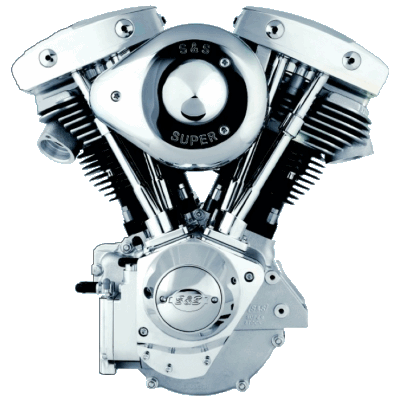 |
Copyright © 1999-2006 dansmc.com. All rights reserved.